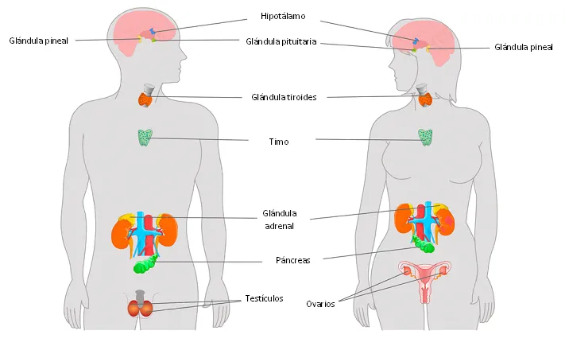
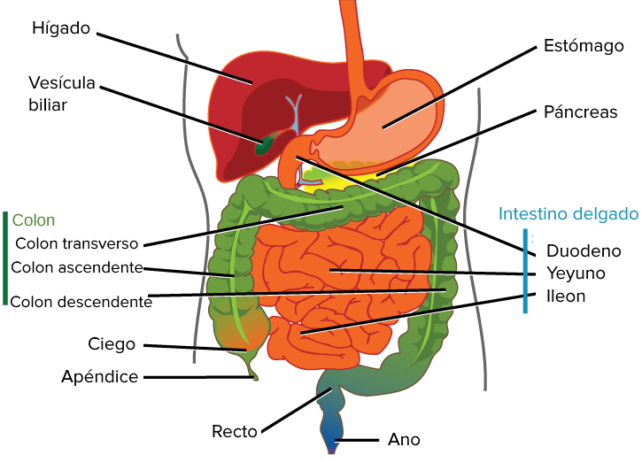
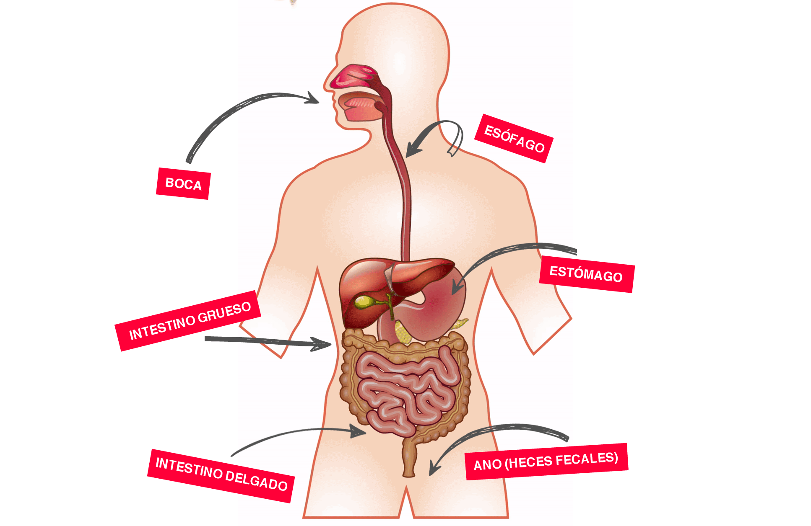

Introduction
 The digestive system is a set of organs responsible for processing the food we consume and converting it into nutrients that the body can absorb and use for energy and maintain its functions. This process is essential for our survival and well-being.
Órganos del Sistema Digestivo
- Boca: Donde comienza el proceso de digestión. Los dientes muelen los alimentos y las glándulas salivales liberan enzimas para iniciar la descomposición.
- Esófago: Un tubo muscular que lleva los alimentos desde la boca hasta el estómago.
- Estómago: Aquí, los alimentos se mezclan con ácidos gástricos que continúan el proceso de descomposición.
- Intestino Delgado: Es donde se absorben la mayoría de los nutrientes. Las enzimas digestivas adicionales descomponen los alimentos aún más.
- Intestino Grueso: Absorbe agua y sales, y prepara los desechos para su eliminación.
- Hígado: Produce bilis, una sustancia que ayuda en la digestión de grasas.
- Páncreas: Libera enzimas digestivas al intestino delgado y regula los niveles de azúcar en la sangre.
Functions of the Parts of the Digestive System
Mouth
The mouth is the starting point of the digestive process. The teeth grind food to facilitate digestion, while the salivary glands release enzymes that begin to break down carbohydrates.
Oesophagus
The esophagus is a muscular tube that transports food from the mouth to the stomach. It uses coordinated muscle contractions, known as peristalsis, to move food.
Stomach
The stomach is a muscular, bag-shaped organ that continues the process of breaking down food. Gastric acids and digestive enzymes work together to further break down food into a substance called chyme.
Small Intestine
The small intestine is where most nutrients are absorbed, including carbohydrates, proteins, fats, vitamins and minerals. Additionally, additional digestive enzymes break down nutrients further for absorption into the bloodstream.
Large Intestine
The large intestine absorbs water and salts from digestion waste. It also hosts a community of beneficial microorganisms known as the intestinal flora.
Liver
The liver produces bile, a substance that helps in the digestion and absorption of fats. Additionally, the liver has many other vital functions, including detoxifying the body.
Pancreas
The pancreas releases digestive enzymes to the small intestine to assist in the breakdown of carbohydrates, proteins and fats. It also secretes insulin and glucagon to regulate blood sugar levels.
Importance of a Balanced Diet
A balanced diet is essential to maintain the health of the digestive system and the body in general. Eating a variety of nutrient-rich foods provides the elements necessary for optimal functioning of the digestive organs and the rest of the body.